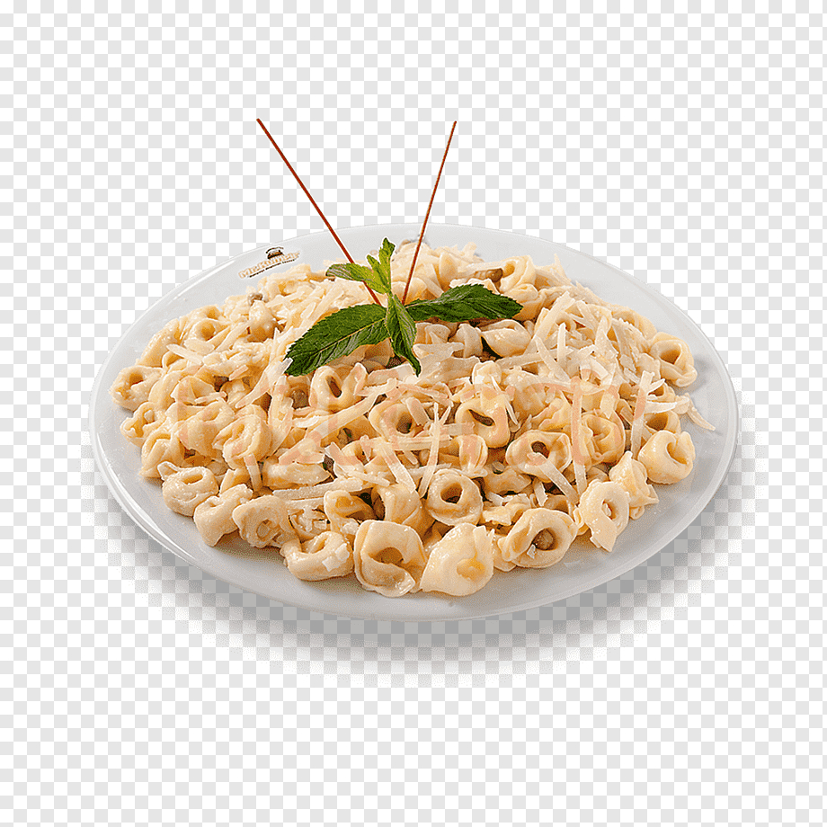

Ingredients
- 1 (16 ounce) package cavatappi (corkscrew macaroni)
- 1 cup mayonnaise
- 3 tablespoons lemon juice
- 2 tablespoons honey
- ½ tablespoon garlic powder
- salt and ground black pepper to taste
- 2 (8 ounce) cans tuna, drained
- 3 stalks celery, sliced
- 1 red onion, diced
- 1 cup peas
- ¼ cup chopped fresh parsley
- ½ cup chopped green olives
- 1 teaspoon lemon juice, or to taste
- 4 hard-boiled eggs, halved
Recipe Instructions
- Bring a large pot of lightly salted water to a boil; cook cavatappi at a boil until tender yet firm to the bite, 9 to 10 minutes. Drain and transfer to a large bowl.
- Whisk mayonnaise, 3 tablespoons lemon juice, honey, garlic powder, salt, and pepper for dressing together in a medium bowl. Set aside.
- Stir tuna, celery, onion, peas, parsley, olives, and 1 teaspoon lemon juice into pasta. Pour dressing over salad, toss until coated, and add hard-boiled eggs on top. Serve.
Return to top
Return to main page